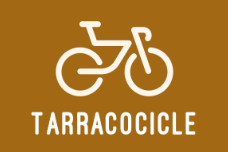

Centre d'investigació de l'importància dels carrils bici a Tarragona
A continuació podeu veure els diversos treballs que hem dut a terme anteriorment:
Actualment, estem focalitzats plenament en aquest projecte, tot i que n’hem fet un recentment:
En un futur, ens agradaria treballar sobre els tres temes que trobareu a continuació, tot i que encara no hem decidit la zona on focalitzarem els projectes: